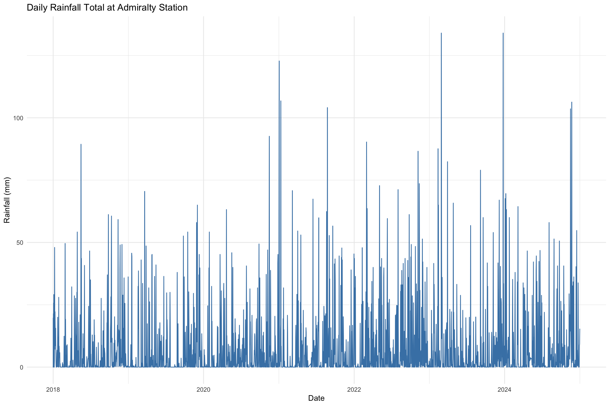
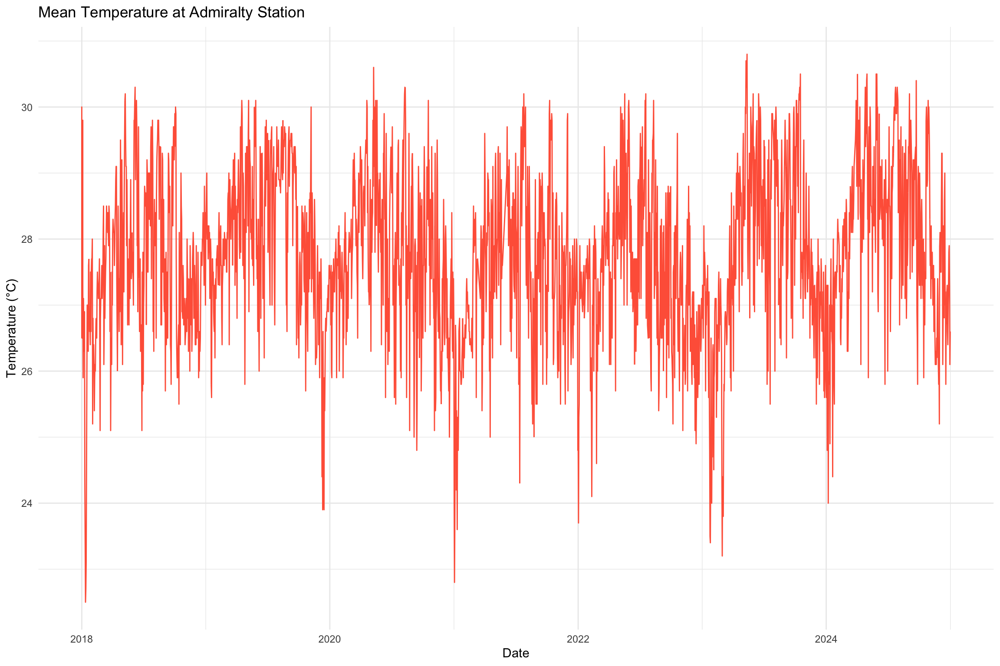
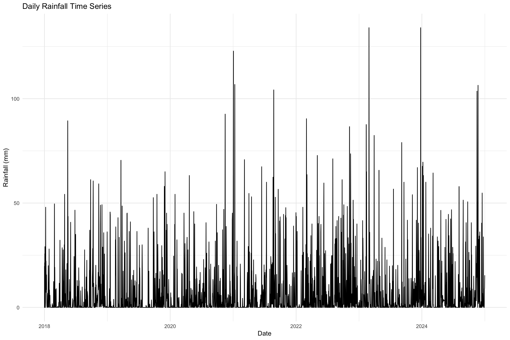
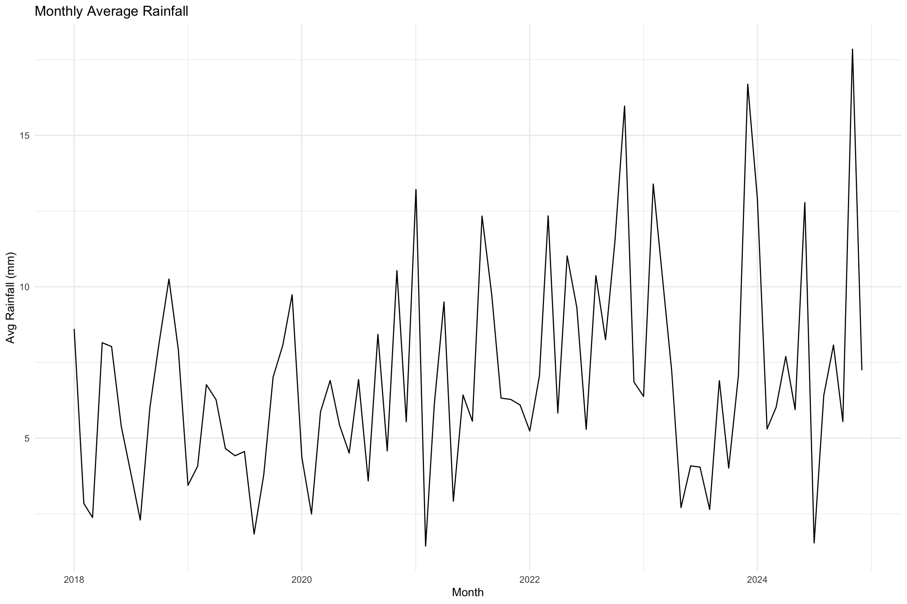
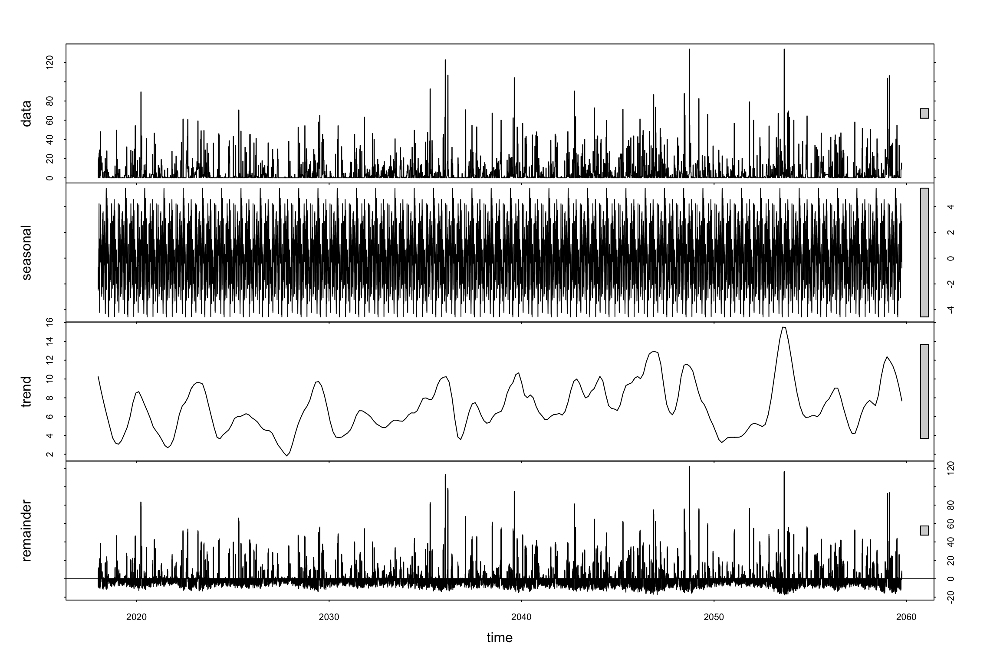
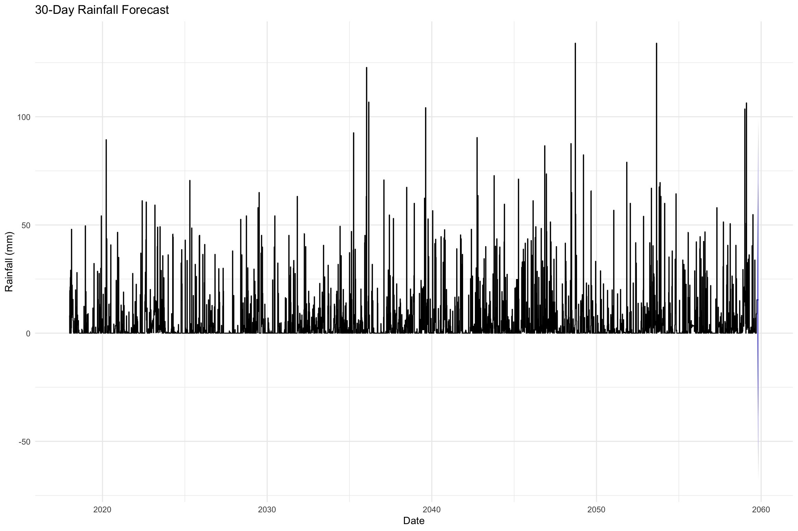

Show the code
pacman::p_load(httr, readxl, dplyr, readr, openxlsx, zoo)Ee Fook Ming
March 22, 2025
March 28, 2025
Singapore’s high temperatures, intense rainfall, and humidity create substantial challenges across industries that depend on reliable, data-driven weather insights. Although current dashboards typically provide only elementary observations, there is a clear need for a more comprehensive, analytics-focused platform. By incorporating in-depth statistical methods, spatial visualizations, and predictive modeling capabilities, such a solution can empower businesses, researchers, and policymakers to anticipate weather-induced risks, manage resources, and make informed decisions.
For Take-home Exercise 3, I will concentrate on Time Series Analysis & Forecasting as a key prototyping requirement, covering the following aspects:
By integrating these methods, the platform aims to offer robust, standalone analytics that serve a diverse set of needs—ranging from urban planning and infrastructure maintenance to insurance and agricultural operations—ultimately promoting greater climate resilience in Singapore.
[1] "S104" "S105" "S109" "S86" "S63" "S120" "S55" "S64" "S90" "S92"
[11] "S61" "S24" "S114" "S121" "S11" "S50" "S118" "S107" "S39" "S101"
[21] "S44" "S117" "S33" "S31" "S71" "S122" "S66" "S112" "S08" "S07"
[31] "S40" "S108" "S113" "S111" "S119" "S116" "S29" "S94" "S06" "S106"
[41] "S81" "S77" "S25" "S102" "S80" "S60" "S36" "S110" "S84" "S79"
[51] "S43" "S78" "S72" "S23" "S88" "S89" "S115" "S82" "S35" "S69"
[61] "S46" "S123" "S91" [1] "Full AWS Station" "Closed Station" "Full AWS Station" "Closed Station"
[5] "Closed Station" "Rainfall Station" "Closed Station" "Rainfall Station"
[9] "Rainfall Station" "Rainfall Station" "Closed Station" "Full AWS Station"
[13] "Rainfall Station" "Full AWS Station" "Closed Station" "Full AWS Station"
[17] "Closed Station" "Full AWS Station" "Closed Station" "Closed Station"
[21] "Full AWS Station" "Full AWS Station" "Rainfall Station" "Closed Station"
[25] "Rainfall Station" "Closed Station" "Rainfall Station" "Rainfall Station"
[29] "Rainfall Station" "Rainfall Station" "Rainfall Station" "Full AWS Station"
[33] "Rainfall Station" "Full AWS Station" "Rainfall Station" "Full AWS Station"
[37] "Rainfall Station" "Rainfall Station" "Full AWS Station" "Full AWS Station"
[41] "Rainfall Station" "Rainfall Station" "Full AWS Station" "Full AWS Station"
[45] "Full AWS Station" "Full AWS Station" "Rainfall Station" "Closed Station"
[49] "Rainfall Station" "Rainfall Station" "Full AWS Station" "Rainfall Station"
[53] "Closed Station" "Full AWS Station" "Rainfall Station" "Rainfall Station"
[57] "Full AWS Station" "Closed Station" "Closed Station" "Closed Station"
[61] "Closed Station" "Closed Station" "Closed Station" The code chunk retrieves station codes and their corresponding types. These codes form part of a text string used to construct hyperlinks, which retrieve data directly from the weather website. There are three station types:
These station identifiers are useful for data filtering, analysis, and visualization based on specific station characteristics.
library(httr)
library(readr)
library(dplyr)
# Set base URL template and save file path
base_url_template <- "http://www.weather.gov.sg/files/dailydata/DAILYDATA_%s_%d%s.csv"
save_file <- "data/Climate_Data_2018_2024.csv"
dir.create(dirname(save_file), recursive = TRUE, showWarnings = FALSE)
# Define expected column names (preserve exact spacing)
column_names <- c(
"Station", "Year", "Month", "Day",
"Daily Rainfall Total (mm)", "Highest 30 min Rainfall (mm)",
"Highest 60 min Rainfall (mm)", "Highest 120 min Rainfall (mm)",
"Mean Temperature (Celsius)", "Maximum Temperature (Celsius)",
"Minimum Temperature (Celsius)", "Mean Wind Speed (km/h)",
"Max Wind Speed (km/h)"
)
# Ensure CSV file has proper headers only if it does not exist
if (!file.exists(save_file)) {
write_csv(as.data.frame(matrix(ncol = length(column_names), nrow = 0, dimnames = list(NULL, column_names))),
save_file)
}
# Function to download and append data
download_and_append <- function(station_code, year, month) {
month_str <- sprintf("%02d", month) # Format month as "01", "02", etc.
file_url <- sprintf(base_url_template, station_code, year, month_str)
# Attempt to download file
response <- tryCatch({
GET(file_url)
}, error = function(e) {
message(sprintf("Error fetching: %s", file_url))
return(NULL)
})
# Skip if download failed
if (is.null(response) || status_code(response) != 200) {
message(sprintf("Skipping failed download: %s", file_url))
return()
}
# Attempt to read the CSV content
csv_data <- tryCatch({
read_csv(content(response, "raw"), show_col_types = FALSE, col_names = FALSE, skip = 1)
}, error = function(e) {
message(sprintf("Failed to read CSV: %s", file_url))
return(NULL)
})
# Skip if data is invalid
if (is.null(csv_data) || ncol(csv_data) != length(column_names)) {
message(sprintf("Skipping invalid dataset: %s", file_url))
return()
}
# Assign column names
colnames(csv_data) <- column_names
# Remove rows where all values (except "Station", "Year", "Month", "Day") are NA, empty, or "-"
csv_data <- csv_data %>%
filter(!if_all(-c(1:4), ~ is.na(.) | . == "" | . == "-"))
# Skip if dataset is still empty after filtering
if (nrow(csv_data) == 0) {
message(sprintf("Skipping empty dataset: %s", file_url))
return()
}
# Append valid data
write_csv(csv_data, save_file, append = TRUE)
message(sprintf("Appended data for %s - %d-%s", station_code, year, month_str))
}
# Loop through each station code and fetch data
for (station_code in station_codes) {
for (year in 2018:2024) {
for (month in 1:12) {
download_and_append(station_code, year, month)
}
}
}
print("Download process completed for all stations.")The code chunk systematically downloads daily climate data from Singapore’s weather service for multiple weather stations, covering years 2018 through 2024. It constructs URLs dynamically based on station codes, year, and month, retrieves CSV files, filters out incomplete or invalid entries, and then consolidates valid data into a single CSV file (Climate_Data_2018_2024.csv). The primary intention is to compile a structured, comprehensive dataset of climate measurements for subsequent analysis or visualization tasks.
library(readxl)
library(dplyr)
library(readr)
# Read station records and climate data
station_records <- read_excel("data/Station_Records.xlsx")
climate_data <- read_csv("data/Climate_Data_2018_2024.csv")
# Filter stations with type \"Full AWS Station\"
full_aws_stations <- station_records %>%
filter(type == "Full AWS Station") %>%
pull(station)
# Filter climate data to include only Full AWS Stations
filtered_climate_data <- climate_data %>%
filter(Station %in% full_aws_stations)
# Check the results
# head(filtered_climate_data)
# Save the filtered data
write_csv(filtered_climate_data, "data/Climate_Data_2018_2024_AWS.csv")The project is interested only in AWS (All Weather Stations).
library(readr)
library(dplyr)
library(stringr)
# Read CSV file (all columns initially as character)
climate_data <- read_csv("data/Climate_Data_2018_2024_AWS.csv",
col_types = cols(.default = "c"),
locale = locale(encoding = "UTF-8"))
# Columns to convert safely to numeric
numeric_columns <- c("Daily Rainfall Total (mm)",
"Highest 30 min Rainfall (mm)",
"Highest 60 min Rainfall (mm)",
"Highest 120 min Rainfall (mm)",
"Mean Temperature (Celsius)",
"Maximum Temperature (Celsius)",
"Minimum Temperature (Celsius)",
"Mean Wind Speed (km/h)",
"Max Wind Speed (km/h)")
# Clean problematic multibyte strings and convert to numeric
climate_data_clean <- climate_data %>%
mutate(across(all_of(numeric_columns), ~str_replace_all(., "[^0-9\\.\\-]", ""))) %>%
mutate(across(all_of(numeric_columns), ~as.numeric(.)))
# Save cleaned data
write_csv(climate_data_clean, "data/Climate_Data_2018_2024_AWS_Cleaned.csv")The code chunk removes special characters from the source file because they cause run-time errors during subsequent processing.
library(readr)
library(dplyr)
library(openxlsx)
# === Load dataset ===
climate <- read_csv("data/Climate_Data_2018_2024_AWS_Cleaned.csv")
original <- climate
# Columns to impute
impute_cols <- c("Daily Rainfall Total (mm)",
"Highest 30 min Rainfall (mm)",
"Highest 60 min Rainfall (mm)",
"Highest 120 min Rainfall (mm)",
"Mean Temperature (Celsius)",
"Maximum Temperature (Celsius)",
"Minimum Temperature (Celsius)",
"Mean Wind Speed (km/h)",
"Max Wind Speed (km/h)")
# === Backward SMA-5 for first 4 rows ===
for (i in 4:1) {
window <- climate[(i + 1):(i + 5), impute_cols]
sma_values <- colMeans(window, na.rm = TRUE) %>% round(1)
climate[i, impute_cols] <- as.list(sma_values)
}
# === Forward SMA-5 for all other NAs ===
for (col in impute_cols) {
na_indices <- which(is.na(climate[[col]]))
for (idx in na_indices) {
if (idx >= 6) { # start from the 6th row to ensure a 5-day window
window_vals <- climate[[col]][(idx - 5):(idx - 1)]
if (all(is.na(window_vals))) {
next # skip if all previous 5 rows are NA, to prevent infinite loop
}
sma_val <- mean(window_vals, na.rm = TRUE) %>% round(1)
climate[[col]][idx] <- sma_val
}
}
}
# === Save updated CSV ===
write_csv(climate,"data/Climate_Final_2018_2024.csv")
# === Prepare Excel with bold + red styling for updated NA values ===
wb <- createWorkbook()
addWorksheet(wb, "Updated_NAs")
# Red bold style
style_red_bold <- createStyle(textDecoration = "bold", fontColour = "#FF0000")
# Write dataset with header row
writeData(wb, "Updated_NAs", climate, startRow = 1, colNames = TRUE)
# Efficiently apply styles to updated cells only
for (col_name in impute_cols) {
col_idx <- which(names(climate) == col_name)
updated_rows <- which(is.na(original[[col_name]]) & !is.na(climate[[col_name]]))
if (length(updated_rows) > 0) {
# Batch style application for performance
addStyle(wb,
sheet = "Updated_NAs",
style = style_red_bold,
rows = updated_rows + 1, # Offset +1 due to header row
cols = rep(col_idx, length(updated_rows)),
gridExpand = FALSE,
stack = TRUE)
}
}
# Save Excel
saveWorkbook(wb, "data/NAs_fields_updated_5-Day.xlsx", overwrite = TRUE)The code chunk above performs data cleaning and imputation on a climate dataset by applying a 5-day Simple Moving Average (SMA-5) to fill missing values in selected weather metrics. Initially, it uses a backward SMA-5 approach to estimate missing data for the first four rows. Subsequently, a forward SMA-5 method is applied to impute missing values throughout the remaining dataset. Additionally, the code highlights imputed values by highlighting them in bold red within an Excel workbook, making the updates clearly identifiable.
# Import Data & Preparation
# Read the data
weather_data <- read_csv("data/Climate_Final_2018_2024.csv")
# Combine Year, Month, and Day into a single date column
weather_ts <- weather_data %>%
mutate(date = make_date(Year, Month, Day)) %>%
select(Station, date, everything(), -Year, -Month, -Day)
# Inspect data
head(weather_ts)# A tibble: 6 × 11
Station date `Daily Rainfall Total (mm)` Highest 30 min Rainfall (mm…¹
<chr> <date> <dbl> <dbl>
1 Admiralty 2018-01-01 7.6 3.1
2 Admiralty 2018-01-02 6.7 2.9
3 Admiralty 2018-01-03 13.6 5.2
4 Admiralty 2018-01-04 12.5 5.2
5 Admiralty 2018-01-05 5 2
6 Admiralty 2018-01-06 0 0
# ℹ abbreviated name: ¹`Highest 30 min Rainfall (mm)`
# ℹ 7 more variables: `Highest 60 min Rainfall (mm)` <dbl>,
# `Highest 120 min Rainfall (mm)` <dbl>, `Mean Temperature (Celsius)` <dbl>,
# `Maximum Temperature (Celsius)` <dbl>,
# `Minimum Temperature (Celsius)` <dbl>, `Mean Wind Speed (km/h)` <dbl>,
# `Max Wind Speed (km/h)` <dbl># A tibble: 6 × 11
Station date `Daily Rainfall Total (mm)` Highest 30 min Rainfall (mm…¹
<chr> <date> <dbl> <dbl>
1 Admiralty 2018-01-01 7.6 3.1
2 Admiralty 2018-01-01 8.1 4.8
3 Admiralty 2018-01-01 0 0
4 Admiralty 2018-01-01 1.1 1.1
5 Admiralty 2018-01-01 16.9 5.5
6 Admiralty 2018-01-01 19.7 11.4
# ℹ abbreviated name: ¹`Highest 30 min Rainfall (mm)`
# ℹ 7 more variables: `Highest 60 min Rainfall (mm)` <dbl>,
# `Highest 120 min Rainfall (mm)` <dbl>, `Mean Temperature (Celsius)` <dbl>,
# `Maximum Temperature (Celsius)` <dbl>,
# `Minimum Temperature (Celsius)` <dbl>, `Mean Wind Speed (km/h)` <dbl>,
# `Max Wind Speed (km/h)` <dbl>

# Preparing data for forecasting
# Select relevant columns for forecasting (Rainfall and Temperature)
forecast_data <- admiralty_ts %>%
select(date, `Daily Rainfall Total (mm)`, `Mean Temperature (Celsius)`)
# Check for missing dates or data gaps
forecast_data <- forecast_data %>%
complete(date = seq(min(date), max(date), by = "day")) %>%
arrange(date)
# Impute missing values if necessary (e.g., using interpolation)
forecast_data <- forecast_data %>%
fill(`Daily Rainfall Total (mm)`, .direction = "downup") %>%
fill(`Mean Temperature (Celsius)`, .direction = "downup")
head(forecast_data)# A tibble: 6 × 3
date `Daily Rainfall Total (mm)` `Mean Temperature (Celsius)`
<date> <dbl> <dbl>
1 2018-01-01 7.6 26.5
2 2018-01-01 8.1 27.5
3 2018-01-01 0 29.2
4 2018-01-01 1.1 30
5 2018-01-01 16.9 27.3
6 2018-01-01 19.7 27.1
# Monthly average plot
forecast_data %>%
mutate(month = floor_date(date, "month")) %>%
group_by(month) %>%
summarise(avg_rainfall = mean(`Daily Rainfall Total (mm)`, na.rm = TRUE)) %>%
ggplot(aes(x = month, y = avg_rainfall)) +
geom_line() +
labs(title = "Monthly Average Rainfall",
x = "Month", y = "Avg Rainfall (mm)") +
theme_minimal()
library(forecast)
# Create a ts object for rainfall (assuming daily frequency)
rainfall_ts <- ts(forecast_data$`Daily Rainfall Total (mm)`,
frequency = 365, # daily data
start = c(year(min(forecast_data$date)), yday(min(forecast_data$date))))
# Classical Decomposition
rainfall_decomp <- stl(rainfall_ts, s.window = "periodic")
plot(rainfall_decomp)
Series: rainfall_ts
ARIMA(0,1,0)
sigma^2 = 60.25: log likelihood = -52858.4
AIC=105718.8 AICc=105718.8 BIC=105726.4
Training set error measures:
ME RMSE MAE MPE MAPE MASE ACF1
Training set 0.0005122425 7.761689 1.687299 -Inf Inf 0.1539936 0.000276127